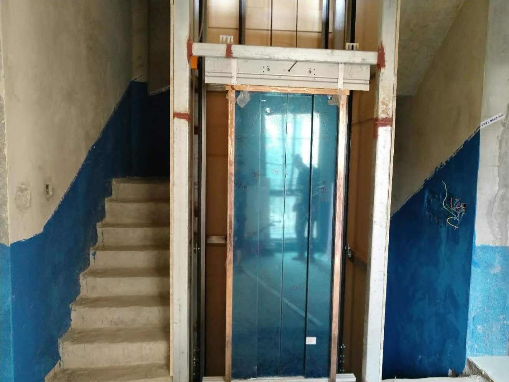
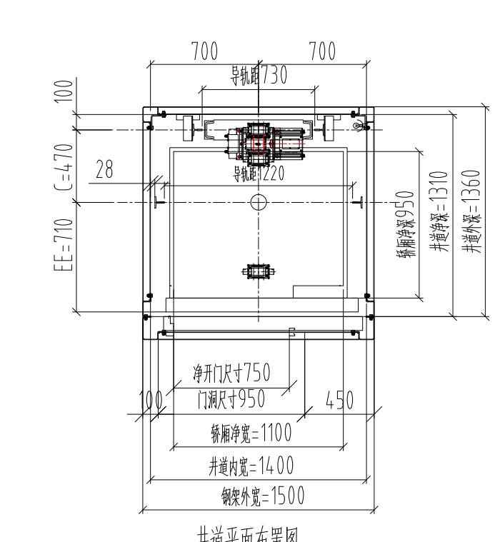
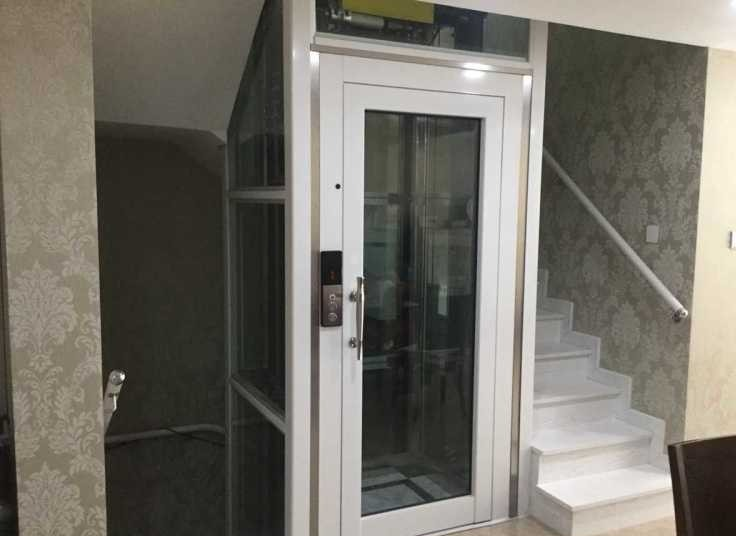
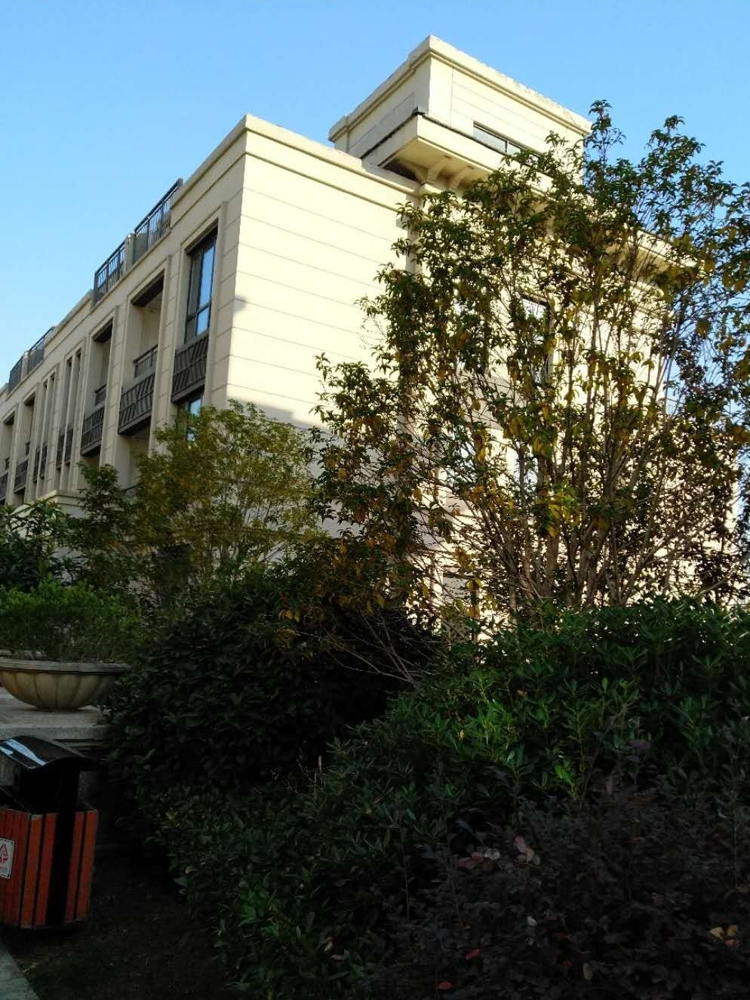

项目地区：合肥·建发雍龙府
项目名称：合肥建发雍龙府样板间家用电梯案例：1.2米井道如何选自动门
房屋类型：样板间 / 小井道方案
客户需求：在有限井道里兼顾展示效果和使用便利性。
现场问题：井道宽度约1.2米，门型、开门尺寸和轿厢净宽需要一起判断。
俞工方案：从液压手拉门调整为曳引自动门，提升长期使用体验。
判断重点：先看井道宽度，再看门洞与轿厢净宽是否匹配。
精品案例库 / 真实项目实拍 / 方案判断记录
每一个案例，都是从现场条件开始判断。
项目地区：合肥·建发雍龙府
房屋类型：样板间 / 小井道方案
客户需求：在有限井道里兼顾展示效果和使用便利性。
现场问题：井道宽度约1.2米，门型、开门尺寸和轿厢净宽需要一起判断。
俞工方案：从液压手拉门调整为曳引自动门，提升长期使用体验。
判断重点：先看井道宽度，再看门洞与轿厢净宽是否匹配。

项目地区：合肥·旭辉湖山源著
房屋类型：别墅 / 楼梯中间加装
客户需求：尽量利用楼梯中间空间，不大改原有动线。
现场问题：需要兼顾楼梯净宽、井道尺寸和开门方向。
俞工方案：采用钢结构井道，把空间、通行和受力一起处理。
判断重点：先保留楼梯通行，再定电梯井道。

项目地区：安徽·安庆
房屋类型：农村自建别墅 / 承重判断
客户需求：在既有井道和地坑基础上确定可行方案。
现场问题：墙体不能直接承重，需要先判断结构路径。
俞工方案：采用侧对重曳引龙门架式思路，先解决受力问题。
判断重点：先看地坑和承重，再看设备。

项目地区：河南·固始
房屋类型：小别墅 / U型楼梯中间空间
客户需求：在空间较小的别墅中安装家用别墅电梯。
现场问题：楼梯中间预留空间有限，需要判断井道和施工方式。
俞工方案：按现场条件做钢结构井道和焊接图纸，再推进设备和安装。
判断重点：先看楼梯关系，再看井道是否成立。

项目地区：合肥·百商澜山墅
房屋类型：小别墅 / 有限空间方案
客户需求：在有限空间里找到可落地的电梯方案。
现场问题：需要先判断楼梯中间位置、井道位置和开门方向。
俞工方案：先把可安装条件摸清，再结合现场做尺寸和结构判断。
判断重点：先看现场，再定井道和开门方式。

项目地区：合肥·鹭山湖
房屋类型：别墅区 / 井道改造
客户需求：既有楼梯和井道条件下重新梳理电梯方案。
现场问题：楼梯通行、井道尺寸和结构固定点需要一起校对。
俞工方案：先判断结构怎么走，再判断设备怎么进。
判断重点：改造类项目先看结构，再看设备。

项目地区：合肥·海亮九台
房屋类型：别墅 / 安装前条件判断
客户需求：在别墅里加装家用电梯前先确认现场条件。
现场问题：井道、楼梯、开门方向和结构固定点需要一起看。
俞工方案：按现场条件匹配适合的家用电梯形式。
判断重点：先看房子，再看电梯。